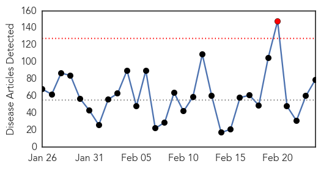
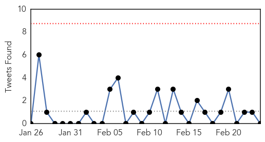

Unknown
30-Day Web Trend
1 alerts, 0 warnings

30-Day Twitter Trend
0 alerts, 0 warnings

Article Locations
Article Confidences

Top Articles:
- 0.997
- Riyadh hospital closed for ignoring MERS guidelines
- 0.996
- the edge of knowledge
- 0.993
- MERS-CoV: UN warns of ‘critical knowledge gaps’
- 0.991
- WHO calls for action over Mers virus - Panorama
- 0.991
- Govt intensifies fight against Tyhpoid as more cases reported
- 0.985
- Chiayi gov't reports 3 new norovirus cases
- 0.973
- Hartland facility dealing with norovirus outbreak
- 0.943
- CDC Says New Tick-Borne Virus May Have Killed Kansas Man
- 0.940
- Who's sterilizing your surgical instruments; superbug on the rise in hospitals
- 0.922
- Moses Cone working to keep superbug from spreading to Piedmont
- 0.917
- Chicago Tribune
- 0.917
- Chicago Tribune
- 0.917
- Chicago Tribune
- 0.917
- Chicago Tribune
- 0.917
- Chicago Tribune
- 0.917
- Chicago Tribune
- 0.917
- Chicago Tribune
- 0.917
- Chicago Tribune
- 0.917
- Chicago Tribune
- 0.917
- Chicago Tribune
- 0.917
- Chicago Tribune
- 0.917
- Chicago Tribune
- 0.917
- Chicago Tribune
- 0.917
- Chicago Tribune
- 0.917
- Chicago Tribune
- 0.917
- Chicago Tribune
- 0.917
- Chicago Tribune
- 0.917
- Chicago Tribune
- 0.917
- Chicago Tribune
- 0.917
- Chicago Tribune
- 0.917
- Chicago Tribune
- 0.917
- Chicago Tribune
- 0.917
- Chicago Tribune
- 0.917
- Chicago Tribune
- 0.917
- Chicago Tribune
- 0.910
- The world windows to Thailand
- 0.900
- Suspected norovirus outbreak sickens 120 people in Taiwan
- 0.882
- California Lawmaker Requesting Congressional Hearing On Superbug Outbreak
- 0.868
- U.S. lawmaker seeks congressional hearing on 'superbug' outbreak – MassDevice
- 0.864
- REFILE-U.S. lawmaker seeks congressional hearing on 'superbug' outbreak
- 0.841
- Mysterious ‘Superbug’ Resistant To Antibiotics Has Resulted In 2 Deaths In North Carolina
- 0.799
- Pinamungajan typhoid outbreak, water source tested positive of coliform
- 0.791
- Mystery disease turns out to be malaria
- 0.753
- Superbug cases reported in North Carolina; 1 dead
- 0.750
- A Doctor's Advice, a Patient's Race Influence Flu Shot Rates
- 0.736
- First tests clear 100 of TB at childcare centre
- 0.732
- Superbug cases reported in North Carolina; 1 dead
- 0.722
- Studies linking fluoride in water to health issues prompt Australian review
- 0.714
- Charlotte man says superbug killed mom more than 1 year ago
- 0.693
- Samples taken from two kids sent to Lucknow for polio tests
Showing top 50 articles...
Top Tweets:
- 0.601
- RT: FLU SCAN: H7N9 infections in China, more H5N1 cases in Egypt, global flu update http://t.co/aiQEev5Eq4
- 0.546
- RT: So corona virus MERS is getting serious ... MOH ( ministry of health ) just send me an SMS .. http://t.co/snBz0mXpps
Influenza
30-Day Web Trend
0 alerts, 0 warnings

30-Day Twitter Trend
0 alerts, 0 warnings

Article Locations
Article Confidences
Top Articles:
- 0.999
- H1N1 Influenza: Measures Taken By India To Fight Swine Flu
- 0.999
- Statement by Shri Jagat Prakash Nadda Union Minister of Health Family
- 0.997
- Intensifying the Battle against Bird Flu, Articles
- 0.989
- Swine Flu: 'Health Ministry has sent teams to assist state govts', says Nadda
- 0.986
- Swine Flu: 'Health Ministry has sent teams to assist state govts', says Nadda
- 0.978
- Achieving community immunity against flu, one school at a time
- 0.974
- Centre recommends swine flu vaccination for healthcare workers
- 0.867
- Gerbils, Not Rats Behind Spread of Black Death
- 0.810
- Only About Children childcare centre worker develops tuberculosis: nine show signs
- 0.751
- February 23, 2015 Archives
- 0.751
- February 23, 2015 Archives
- 0.751
- February 23, 2015 Archives
- 0.684
- Update on imported human case of avian influenza A(H7N9)
Top Tweets:
-
No tweets found for Feb 24, 2015